Sormenpäät
Piirrä hehkuvia valojälkiä.

AELITHMOTION STUDIOLiikuta osoitinta. Paina ja vapauta.
Avaa kamera, kun haluat käyttää käsiäsi.
Kokeile ensin valoa. Kamera käynnistyy vain painikkeesta.
Piirrä hehkuvia valojälkiä.
Kerää energiaa nyrkkiin. Avaa ja vapauta.
Peukalo + etusormi luovat valokehän.
Kädet kokonaan kuvaan · valoa kasvojen suunnasta · aloita noin metrin päästä kamerasta